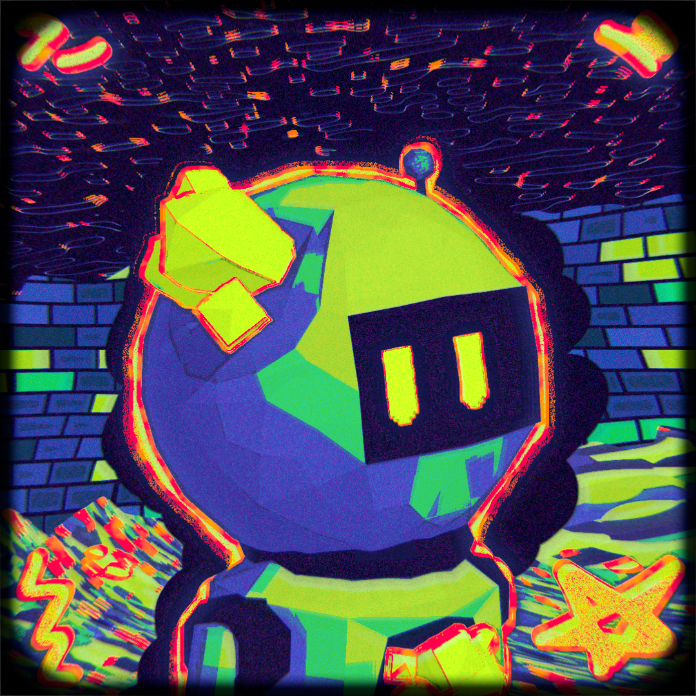
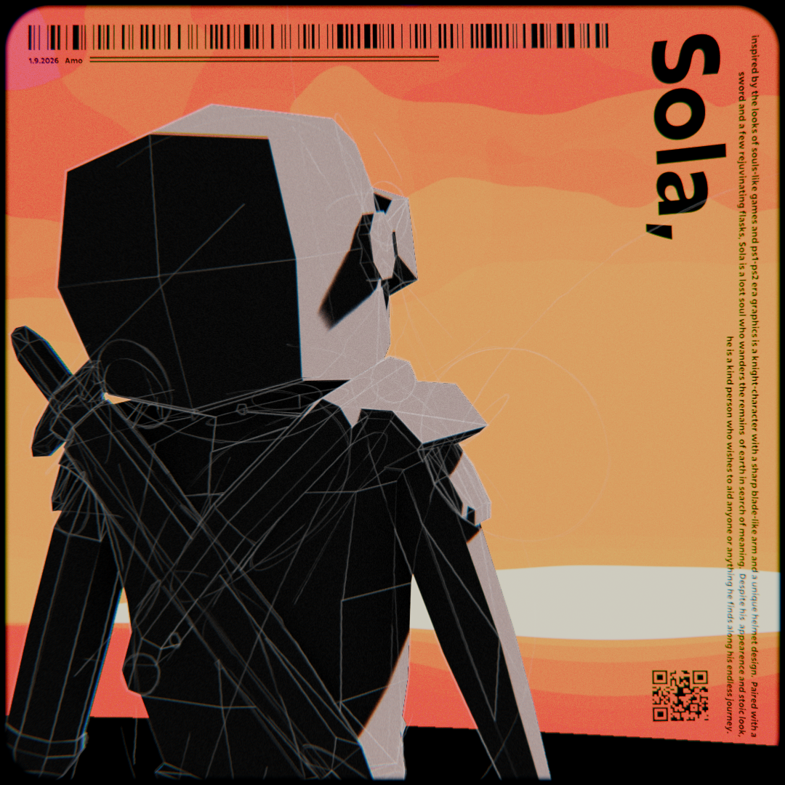
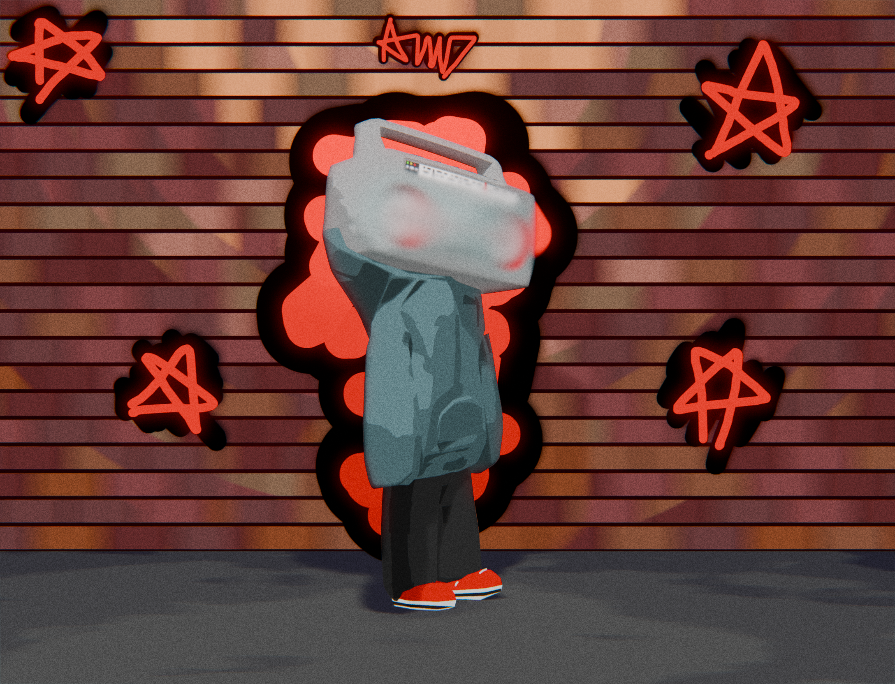
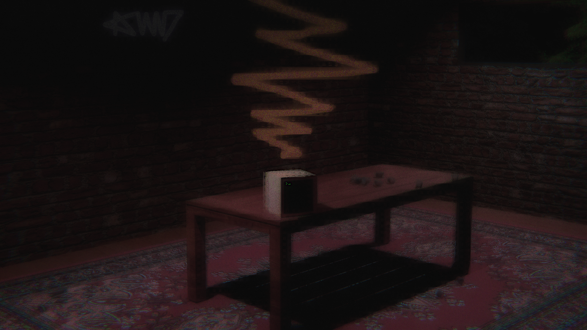
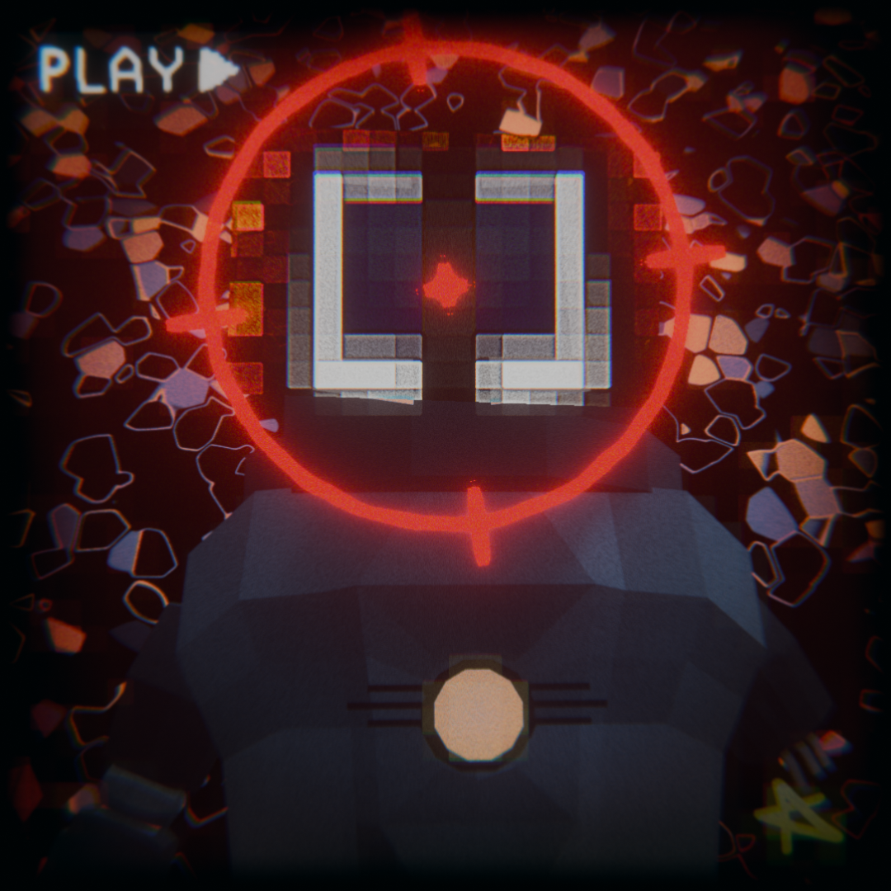

Poison
Tried to recreate the style of paralysis but ended up with something i ended up liking even more.
I'm a 3D artist who enjoys making unique art.
I make all of my models in Blockbench and render and composite in Blender.
Below are a few examples of my 3D models.
Tried to recreate the style of paralysis but ended up with something i ended up liking even more.

A bit of an experiment with flat colours, world shading and grease pencil.
Most of the work in this is done with the background and the compositing (the lighting on sola is not actully in the model or shading but done in post in compositing).

Render inspired by the song "il y a pleine lune ce soir" by Willyrodriguezwastaken
The bottom half is kinda hard to make out on the white background, I suggest zooming in for an actual good look.

il y a pleine lune ce soir - Willyrodriguezwastaken: Spotify Good song, amazing band.
"the state or condition of stagnating, or having stopped, as by ceasing to run or flow."
Had an idea of moving the scene with motion blur for a cool backdrop and I just made the rest up from there.

Wated to try a bunch of stuff with this one and it ended up being probably my strangest render yet.

Made this while listening to MAGFEST
Idk why but the single lyric "get my head out the scope" really provoked this sort of image for me.

MAGFEST - Femtanyl: Spotify

All of my extra renders that I didn't want cluttering up the main gallery.

How I import my blockbench models into blender to get them working with rigging, posing and rendering